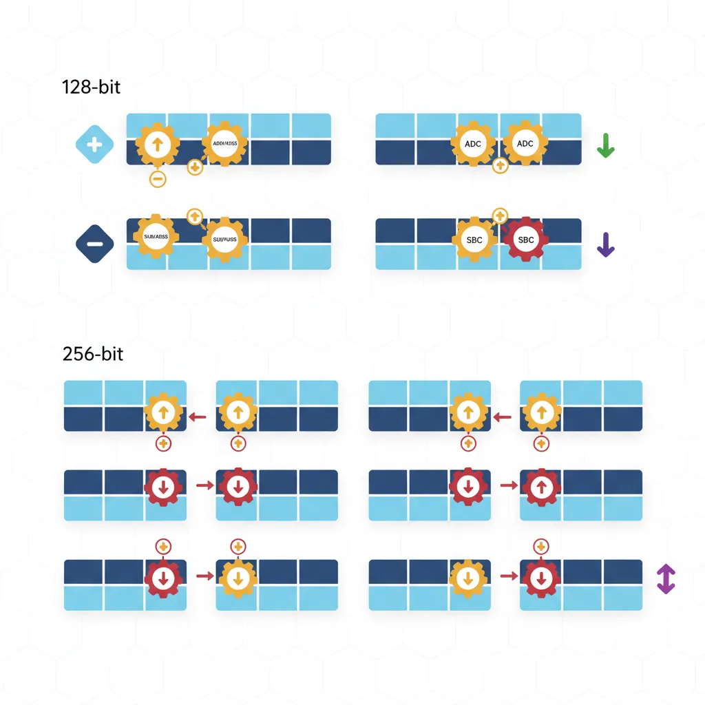
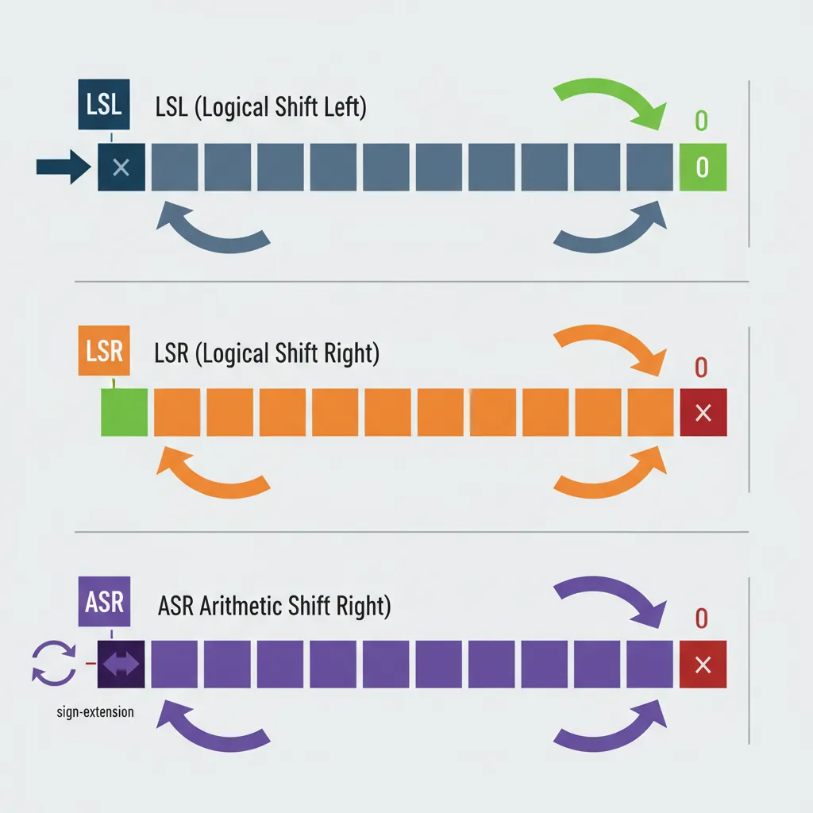
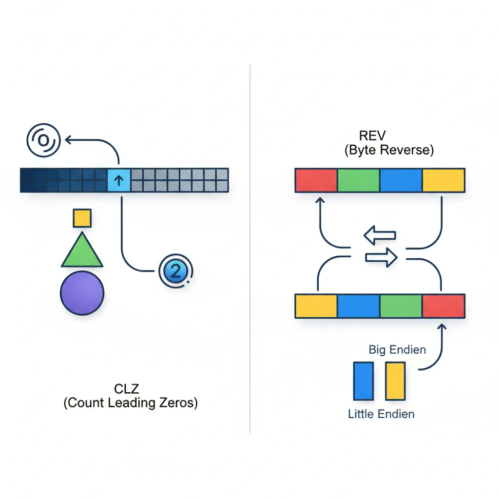

Introduction
ARM Assembly Mastery
Architecture History & Core Concepts
ARMv1→v9, RISC philosophy, profilesARM32 Instruction Set Fundamentals
ARM vs Thumb, registers, CPSR, barrel shifterAArch64 Registers, Addressing & Data Movement
X/W regs, addressing modes, load/store pairsArithmetic, Logic & Bit Manipulation
ADD/SUB, bitfield extract/insert, CLZBranching, Loops & Conditional Execution
Branch types, link register, jump tablesStack, Subroutines & AAPCS
Calling conventions, prologue/epilogueMemory Model, Caches & Barriers
Weak ordering, DMB/DSB/ISB, TLBNEON & Advanced SIMD
Vector ops, intrinsics, media processingSVE & SVE2 Scalable Vector Extensions
Predicate regs, gather/scatter, HPC/MLFloating-Point & VFP Instructions
IEEE-754, scalar FP, rounding modesException Levels, Interrupts & Vector Tables
EL0–EL3, GIC, fault debuggingMMU, Page Tables & Virtual Memory
Stage-1 translation, permissions, huge pagesTrustZone & ARM Security Extensions
Secure monitor, world switching, TF-ACortex-M Assembly & Bare-Metal Embedded
NVIC, SysTick, linker scripts, low-powerCortex-A System Programming & Boot
EL3→EL1 transitions, MMU setup, PSCIApple Silicon & macOS ABI
ARM64e PAC, Mach-O, dyld, perf countersInline Assembly, GCC/Clang & C Interop
Constraints, clobbers, compiler interactionPerformance Profiling & Micro-Optimization
Pipeline hazards, PMU, benchmarkingReverse Engineering & ARM Binary Analysis
ELF, disassembly, CFR, iOS/Android quirksBuilding a Bare-Metal OS Kernel
Bootloader, UART, scheduler, context switchARM Microarchitecture Deep Dive
OOO pipelines, reorder buffers, branch predictVirtualization Extensions
EL2 hypervisor, stage-2 translation, KVMDebugging & Tooling Ecosystem
GDB, OpenOCD/JTAG, ETM/ITM, QEMULinkers, Loaders & Binary Format Internals
ELF deep dive, relocations, PIC, crt0Cross-Compilation & Build Systems
GCC/Clang toolchains, CMake, firmware genARM in Real Systems
Android, FreeRTOS/Zephyr, U-Boot, TF-ASecurity Research & Exploitation
ASLR, PAC attacks, ROP/JOP, kernel exploitEmerging ARMv9 & Future Directions
MTE, SME, confidential compute, AI accelISA Overview
AArch64's integer data-processing instructions share a beautifully consistent design philosophy: every instruction is exactly 32 bits wide, operates exclusively on registers (no memory-operand arithmetic), and follows a uniform Op Xd, Xn, Xm three-operand format. Most instructions accept an optional shift or extend on the last source operand, allowing compound operations in a single cycle.
Think of AArch64's ALU instructions like a well-stocked kitchen where every tool has a consistent handle. You always grip it the same way: destination first, then inputs. Once you learn the pattern for ADD, you've effectively learned the syntax for all 50+ data-processing instructions.
ADD RAX, RBX overwrites the first operand, AArch64 always uses three registers: ADD x0, x1, x2 writes to X0 without destroying X1 or X2. This saves the compiler from generating MOV instructions to preserve values, reducing register pressure.
Flag-Setting Variants
One of AArch64's most important design decisions: arithmetic instructions do NOT set condition flags by default. You must explicitly use the S suffix — ADDS, SUBS, ANDS — to update NZCV. This is the opposite of ARM32, where most instructions could set flags via the S suffix but defaulted to not. In AArch64, the separation is absolute:
| Instruction | Flags Updated? | Use Case |
|---|---|---|
ADD x0, x1, x2 | No | Pure computation — doesn't disturb ongoing flag-dependent logic |
ADDS x0, x1, x2 | Yes (NZCV) | When you need to branch on the result, or chain ADC |
SUB x0, x1, x2 | No | Pure subtraction |
SUBS x0, x1, x2 | Yes (NZCV) | Comparison + result in one instruction |
CMP x1, x2 | Yes (NZCV) | Pseudo for SUBS xzr, x1, x2 — flags only, result discarded |
AND x0, x1, x2 | No | Pure bitwise AND |
ANDS x0, x1, x2 | Yes (NZ, C cleared, V unchanged) | Test bits and branch on result |
TST x1, x2 | Yes | Pseudo for ANDS xzr, x1, x2 — flags only |
ADD when you meant ADDS before a conditional branch. The branch reads stale flags from a previous flag-setting instruction, producing wrong behaviour that only manifests under specific input values. Always double-check: does your branch depend on flags from the instruction directly above?
Addition & Subtraction
ADD, SUB, NEG
The workhorse instructions of any program. AArch64 provides register-register, register-immediate, and shifted-register forms for both addition and subtraction. NEG is a pseudo-instruction that subtracts from zero:

// Basic arithmetic
ADD x0, x1, x2 // x0 = x1 + x2
ADD x0, x1, #100 // x0 = x1 + 100 (12-bit unsigned imm)
ADD x0, x1, #0x1000 // x0 = x1 + 4096 (can shift imm by 12)
SUB x0, x1, x2 // x0 = x1 - x2
SUB x0, x1, #1 // x0 = x1 - 1 (decrement)
NEG x0, x1 // x0 = -x1 (pseudo: SUB x0, xzr, x1)
ADDS x0, x1, x2 // x0 = x1 + x2; set NZCV flags
SUBS x0, x1, #0 // x0 = x1; set flags (test for zero/negative)
// Shifted register forms (combine shift + add in one instruction)
ADD x0, x1, x2, LSL #3 // x0 = x1 + (x2 << 3) = x1 + x2*8
SUB x0, x1, x2, ASR #2 // x0 = x1 - (x2 >> 2) signedADD x0, x1, x1, LSL #2 (x1 + x1×4 = x1×5). Multiply by 7: SUB x0, x1, LSL #3, x1 or RSB-style via negation. These execute in a single cycle with zero latency penalty.
ADC/SBC — With Carry
When 64 bits aren't enough, carry-chaining lets you perform arithmetic on values of any width. ADC (Add with Carry) adds two registers plus the C flag; SBC (Subtract with Carry) subtracts and includes the borrow. This is how you implement 128-bit, 256-bit, or even arbitrary-precision arithmetic:
// 128-bit addition: (x1:x0) + (x3:x2) → (x5:x4)
ADDS x4, x0, x2 // Lower 64 bits; sets C if carry-out
ADC x5, x1, x3 // Upper 64 bits plus carry-in
// 128-bit subtraction: (x1:x0) - (x3:x2) → (x5:x4)
SUBS x4, x0, x2 // Lower 64 bits; clears C if borrow
SBC x5, x1, x3 // Upper 64 bits minus borrow
// 256-bit addition: (x3:x2:x1:x0) + (x7:x6:x5:x4) → (x11:x10:x9:x8)
ADDS x8, x0, x4 // Word 0: sets C
ADCS x9, x1, x5 // Word 1: uses C, sets new C
ADCS x10, x2, x6 // Word 2: uses C, sets new C
ADC x11, x3, x7 // Word 3: uses final CBig-Integer Arithmetic in TLS/SSL
RSA-2048 encryption requires arithmetic on 2048-bit numbers — that's 32 × 64-bit registers chained with ADCS/SBCS. AArch64's clean carry semantics make the inner loop of bignum multiplication just two instructions per limb: MUL + ADCS. Compared to x86-64 where the carry flag behaviour is more complex, ARM's explicit ADCS/SBCS chain is often simpler to reason about for cryptographic library authors.
Extended Register Forms
AArch64 provides extend-and-add operations that zero-extend or sign-extend a narrower register before adding. This is invaluable when a 32-bit index needs to be added to a 64-bit base pointer without a separate extension instruction:
// Extended register forms
ADD x0, x1, w2, UXTW // x0 = x1 + zero_extend(w2)
ADD x0, x1, w2, UXTW #2 // x0 = x1 + zero_extend(w2) << 2
// (array[i] where i is uint32_t, sizeof=4)
ADD x0, x1, w2, SXTW // x0 = x1 + sign_extend(w2)
ADD x0, x1, w2, SXTW #3 // x0 = x1 + sign_extend(w2) << 3
// (array[i] where i is int32_t, sizeof=8)
SUB x0, sp, x1, UXTX #4 // x0 = sp - x1*16 (64-bit extend + shift)| Extension | Mnemonic | Meaning | Source Width |
|---|---|---|---|
| UXTB | Unsigned Extend Byte | Zero-extend bits [7:0] | 8-bit |
| UXTH | Unsigned Extend Halfword | Zero-extend bits [15:0] | 16-bit |
| UXTW | Unsigned Extend Word | Zero-extend bits [31:0] | 32-bit |
| UXTX | Unsigned Extend Doubleword | No extension (identity for 64-bit) | 64-bit |
| SXTB | Signed Extend Byte | Sign-extend bits [7:0] | 8-bit |
| SXTH | Signed Extend Halfword | Sign-extend bits [15:0] | 16-bit |
| SXTW | Signed Extend Word | Sign-extend bits [31:0] | 32-bit |
| SXTX | Signed Extend Doubleword | Sign-extend (identity for 64-bit) | 64-bit |
Multiply & Divide
MUL, MADD, MSUB
AArch64 provides dedicated multiply instructions that are far more powerful than the shift-and-add patterns used in simpler processors. The star of the show is MADD (Multiply-Add) — a fused multiply-accumulate that computes Xa + Xn × Xm in a single instruction. MUL is just a pseudo-instruction for MADD with the accumulator set to zero:
// Multiply and multiply-accumulate
MUL x0, x1, x2 // x0 = x1 * x2 (lower 64 bits)
// Pseudo: MADD x0, x1, x2, xzr
MADD x0, x1, x2, x3 // x0 = x3 + (x1 * x2)
MSUB x0, x1, x2, x3 // x0 = x3 - (x1 * x2)
MNEG x0, x1, x2 // x0 = -(x1 * x2)
// Pseudo: MSUB x0, x1, x2, xzr
// 32-bit variants (use W registers)
MUL w0, w1, w2 // w0 = w1 * w2 (lower 32 bits)
SMADDL x0, w1, w2, x3 // x0 = x3 + sign_extend(w1 * w2)
// Signed 32×32→64 multiply-add
UMADDL x0, w1, w2, x3 // x0 = x3 + zero_extend(w1 * w2)
// Unsigned 32×32→64 multiply-addMADD replaces what would be a MUL + ADD sequence, saving dispatch bandwidth and often executing with the same latency as a bare multiply (3–5 cycles on modern cores). This is the integer equivalent of the famous FMADD for floating-point.
High-Product: UMULH, SMULH
When you multiply two 64-bit numbers, the result can be up to 128 bits. MUL gives you the lower 64 bits; to get the upper 64 bits, you need UMULH (unsigned) or SMULH (signed):
// Full 128-bit product: x1 * x2 → (hi:lo) = (x4:x3)
MUL x3, x1, x2 // x3 = lower 64 bits of x1*x2
UMULH x4, x1, x2 // x4 = upper 64 bits (unsigned)
// Signed 128-bit product
MUL x3, x1, x2 // x3 = lower 64 bits
SMULH x4, x1, x2 // x4 = upper 64 bits (signed)
// Practical use: check for overflow
MUL x0, x1, x2 // Compute product
UMULH x3, x1, x2 // Check upper bits
CBNZ x3, overflow_detected // If upper != 0, overflow occurredUDIV, SDIV
AArch64 includes hardware integer division — a significant upgrade from ARM32 where division was often done in software. Two key surprises for newcomers:
- No divide-by-zero exception: Dividing by zero silently returns 0 (not a trap). You must check the divisor manually if zero-division needs to be an error.
- No remainder instruction: There's no
REMorMOD. To compute the remainder, use theMSUBidiom:remainder = dividend - (quotient × divisor).
// Division and remainder
UDIV x0, x1, x2 // x0 = x1 / x2 (unsigned, truncated)
MSUB x3, x0, x2, x1 // x3 = x1 - (x0 * x2) = x1 % x2
SDIV x0, x1, x2 // x0 = x1 / x2 (signed, toward zero)
MSUB x3, x0, x2, x1 // x3 = signed remainder
// Safe division with zero check
CBZ x2, div_by_zero // Check divisor first!
UDIV x0, x1, x2
MSUB x3, x0, x2, x1
// Integer percentage: (count * 100) / total
MOV x3, #100
MUL x4, x0, x3 // count * 100
UDIV x5, x4, x1 // percentageDivision Latency — The Expensive Instruction
On most AArch64 cores, UDIV/SDIV has a latency of 12–20 cycles — roughly 4× slower than MUL (3–5 cycles). Compilers aggressively replace division by constants with multiply-by-reciprocal sequences: dividing by 10 becomes a UMULH with the magic constant 0xCCCCCCCCCCCCCCCD followed by a shift. If you see unexplained UMULH instructions in compiler output, this is why.
Logical Operations
AND, ORR, EOR, BIC
Logical operations are the "gears of the machine" — they manipulate individual bits, and nearly every low-level task (permission checking, hardware register programming, hashing, encryption) depends on them. AArch64 provides four core bitwise operations, each in register and immediate form:
// Core logical operations
AND x0, x1, x2 // x0 = x1 & x2 (bits set in BOTH)
ORR x0, x1, x2 // x0 = x1 | x2 (bits set in EITHER)
EOR x0, x1, x2 // x0 = x1 ^ x2 (bits DIFFERENT)
BIC x0, x1, x2 // x0 = x1 & ~x2 (clear bits of x1
// where x2 has 1s)
// With shifted second operand
AND x0, x1, x2, LSL #8 // x0 = x1 & (x2 << 8)
ORR x0, x1, x2, ROR #16 // x0 = x1 | rotate_right(x2, 16)
// Flag-setting variants
ANDS x0, x1, x2 // x0 = x1 & x2; set NZ flags
BICS x0, x1, x2 // x0 = x1 & ~x2; set NZ flags
// Immediate forms (bitmask patterns)
AND x0, x1, #0xFF // Mask bottom byte
ORR x0, x1, #0x80000000 // Set bit 31
EOR x0, x1, #0xFFFFFFFF // Toggle lower 32 bits| Instruction | Operation | Common Use | Analogy |
|---|---|---|---|
AND | Bitwise AND | Mask/extract bits, check permissions | Stencil: only lets through bits where both have 1s |
ORR | Bitwise OR | Set bits/flags, combine fields | Paint roller: adds colour wherever the mask has 1s |
EOR | Bitwise XOR | Toggle bits, checksums, swap (without temp) | Light switch: flips state wherever the mask has 1s |
BIC | Bit Clear (AND NOT) | Clear specific bits, remove flags | Eraser: removes bits wherever the mask has 1s |
GPIO Pin Configuration in Linux
A typical GPIO controller register has 2 bits per pin (input, output, alt-function). To set pin 5 to output mode (0b01) without disturbing other pins:
// Read-modify-write a GPIO configuration register
LDR x0, [x1] // Read current register value
BIC x0, x0, #(0x3 << 10) // Clear bits [11:10] (pin 5's field)
ORR x0, x0, #(0x1 << 10) // Set bit 10 (output mode = 0b01)
STR x0, [x1] // Write back modified valueThis read-modify-write pattern using BIC + ORR is the bread and butter of bare-metal programming on ARM.
TST, MVN, ORN
Three additional logical instructions that appear frequently in compiler output and hand-written assembly:
// TST — Test bits (AND without storing result)
TST x0, #0x1 // Test bit 0: is x0 odd?
// Pseudo: ANDS xzr, x0, #0x1
B.NE is_odd // Branch if bit was set (Z=0)
TST x0, x1 // Test if x0 and x1 share any set bits
B.EQ no_common_bits // Branch if result was zero
// MVN — Bitwise NOT (move negated)
MVN x0, x1 // x0 = ~x1 (flip all bits)
// Pseudo: ORN x0, xzr, x1
MVN x0, x1, LSL #4 // x0 = ~(x1 << 4)
// ORN — OR NOT
ORN x0, x1, x2 // x0 = x1 | ~x2
EON x0, x1, x2 // x0 = x1 ^ ~x2 (XNOR)Logical Immediates — The Bitmask Encoding
AArch64's logical immediate encoding is one of its most elegant — and initially confusing — features. Instead of a simple 12-bit constant like ADD uses, logical instructions encode a repeating bitmask pattern using three fields: N, immr, and imms. This allows encoding patterns like:
| Pattern | Hex Value | Encodable? | Use Case |
|---|---|---|---|
| Bottom byte mask | 0x00000000000000FF | ✅ Yes | Extract byte |
| Alternating bits | 0x5555555555555555 | ✅ Yes | Even/odd bit selection |
| Nibble mask repeated | 0x0F0F0F0F0F0F0F0F | ✅ Yes | Popcount helper |
| Page alignment mask | 0xFFFFFFFFFFFFF000 | ✅ Yes | Page address extraction |
All zeros 0x0 | 0x0000000000000000 | ❌ No | Use MOV xzr |
All ones 0xFFFF...F | 0xFFFFFFFFFFFFFFFF | ❌ No | Use MVN xzr |
| Arbitrary constant | 0x123456789ABCDEF0 | ❌ No | Use MOVZ/MOVK sequence |
MOVZ/MOVK and then AND/ORR with the register.
Shift Instructions
LSL, LSR, ASR
Shifts are the binary equivalent of moving a decimal point. Shifting left by 1 doubles a number; shifting right by 1 halves it. AArch64 provides three shift types as standalone instructions and as modifiers on other operations:

// Logical Shift Left — fills vacated bits with 0
LSL x0, x1, #3 // x0 = x1 << 3 (multiply by 8)
LSL x0, x1, x2 // x0 = x1 << (x2 mod 64)
// Logical Shift Right — fills vacated bits with 0 (unsigned divide)
LSR x0, x1, #4 // x0 = x1 >> 4 (unsigned divide by 16)
LSR x0, x1, x2 // x0 = x1 >> (x2 mod 64)
// Arithmetic Shift Right — fills with sign bit (signed divide)
ASR x0, x1, #1 // x0 = x1 >> 1 (signed divide by 2)
ASR x0, x1, x2 // x0 = x1 >> (x2 mod 64)
// 32-bit shifts (operate on W registers)
LSL w0, w1, #4 // w0 = w1 << 4 (shift mod 32)
LSR w0, w1, #16 // w0 = w1 >> 16
ASR w0, w1, #31 // w0 = sign bit of w1 replicated| Shift | Mnemonic | Fill Bits | Equivalent C | Common Use |
|---|---|---|---|---|
| Logical Left | LSL | Zeros (right) | x << n | Multiply by 2ⁿ, build masks |
| Logical Right | LSR | Zeros (left) | (unsigned)x >> n | Unsigned divide by 2ⁿ, extract high bits |
| Arithmetic Right | ASR | Sign bit (left) | (signed)x >> n | Signed divide by 2ⁿ, sign extension |
LSR x0, -1, #1 gives 0x7FFFFFFFFFFFFFFF (huge positive), while ASR x0, -1, #1 gives 0xFFFFFFFFFFFFFFFF (-1, correct). This is a common bug in hand-written assembly.
ROR — Rotate Right
Unlike shifts that discard bits, a rotation wraps bits from one end to the other like a conveyor belt. Bits shifted off the right reappear on the left:
// Rotate Right
ROR x0, x1, #4 // Rotate x1 right by 4 bits
// Pseudo: EXTR x0, x1, x1, #4
ROR x0, x1, x2 // Rotate right by variable amount
// Pseudo: RORV x0, x1, x2
// EXTR — Extract from pair (the real instruction behind ROR)
EXTR x0, x1, x2, #16 // x0 = (x1:x2)[79:16]
// Extracts 64 bits from a 128-bit pair
// When x1 == x2, this becomes ROR
// Example: rotate a CRC polynomial
ROR w0, w0, #1 // Rotate CRC value right by 1 (32-bit)EXTR Xd, Xn, Xm, #lsb extracts a 64-bit value from the concatenation of Xn:Xm. When Xn and Xm are the same register, it becomes a rotate. But the general form is invaluable for multi-word shift operations — equivalent to x86-64's SHRD instruction.
Shift-Immediate in ALU Ops
This is one of AArch64's most powerful features for code density: most data-processing instructions can include a free shift on the last source operand. The shift is encoded in the instruction itself and executes in the same cycle — no separate shift instruction needed:
// Shift folded into ADD/SUB (free — same cycle)
ADD x0, x1, x2, LSL #2 // x0 = x1 + (x2 * 4)
SUB x0, x1, x2, LSR #3 // x0 = x1 - (x2 / 8)
ADD x0, x1, x2, ASR #1 // x0 = x1 + (x2 / 2, signed)
// Shift folded into logical operations
AND x0, x1, x2, LSL #8 // x0 = x1 & (x2 << 8)
ORR x0, xzr, x1, LSL #4 // x0 = x1 << 4 (LSL via ORR!)
EOR x0, x1, x2, ROR #7 // x0 = x1 ^ rotate(x2, 7)
// Practical: array element access patterns
// C: array[i] where sizeof(element) = 8
ADD x0, x_base, x_index, LSL #3 // addr = base + index*8
// Strength reduction: x * 5 = x + x*4
ADD x0, x1, x1, LSL #2 // x0 = x1 * 5
// x * 7 = x*8 - x
LSL x0, x1, #3
SUB x0, x0, x1 // x0 = x1 * 7
// x * 9 = x*8 + x
ADD x0, x1, x1, LSL #3 // x0 = x1 * 9Compiler Strength Reduction — Replacing MUL with Shifts
Compilers replace multiplication by small constants with ADD/SUB + shift combinations because they execute in 1 cycle vs. MUL's 3–5 cycles. The pattern: express the constant as a sum/difference of powers of 2. x×15 = x×16 - x = (x<<4) - x. GCC and Clang apply this automatically at -O2 and above. When reading compiler output, these seemingly random shift-add chains are almost always multiply-by-constant.
Bitfield Instructions
UBFX & SBFX — Extract
Think of a hardware register as a row of coloured mailboxes. UBFX (Unsigned Bitfield Extract) reaches in and pulls out a specific group of mailboxes, placing them right-aligned in the destination and filling everything else with zeros. SBFX does the same but sign-extends — if the topmost extracted bit is 1, the upper bits fill with 1s instead of 0s:
// Bitfield extract
UBFX x0, x1, #4, #8 // x0 = bits [11:4] of x1, zero-extended
// Equivalent to: (x1 >> 4) & 0xFF
SBFX x0, x1, #4, #8 // x0 = bits [11:4] of x1, sign-extended
// If bit 11 is 1, upper bits = all 1s
// Extract a 3-bit field from a status register
UBFX w0, w1, #21, #3 // Extract mode bits [23:21]
// Signed extraction for temperature sensor (-128 to +127 in bits [15:8])
SBFX w0, w1, #8, #8 // Sign-extend the temperature field
// Compare: old ARM32 way vs AArch64
// ARM32: LSR r0, r1, #4 then AND r0, r0, #0xFF (2 instructions)
// AArch64: UBFX x0, x1, #4, #8 (1 instruction)BFI & BFC — Insert & Clear
BFI (Bitfield Insert) is the inverse of UBFX: it takes the lower bits from a source register and inserts them into a specific position in the destination, leaving all other destination bits untouched. BFC (Bitfield Clear) zeros out a specific field — it's BFI with a zero-register source:
// Bitfield insert and clear
BFI x0, x1, #8, #4 // Insert x1[3:0] into x0[11:8]
// Only bits [11:8] of x0 change
BFC x0, #8, #4 // Clear x0[11:8] to zero
// Pseudo: BFI x0, xzr, #8, #4
// Build a page table entry: set bits [47:12] to physical page
BFI x0, x1, #12, #36 // Insert 36-bit PPN at position 12
// Set interrupt priority in GIC register (bits [7:4])
BFC x0, #4, #4 // Clear old priority
BFI x0, x2, #4, #4 // Insert new 4-bit priority
// Combine two byte values into one halfword
AND x0, x1, #0xFF // x0 = low byte
BFI x0, x2, #8, #8 // Insert high byte at [15:8]Building ARM Page Table Entries
An AArch64 Level 3 page table descriptor packs 10+ fields into a single 64-bit value: output address [47:12], access permissions [7:6], shareability [9:8], memory attributes [4:2], and more. Without BFI, each field requires a shift + mask + OR sequence (3 instructions). With BFI, it's a single instruction per field — cutting the page table setup code nearly in half:
// Build a 4KB page descriptor
MOV x0, #0x3 // Valid + Table/Page bits [1:0]
BFI x0, x_mair, #2, #3 // AttrIndex [4:2]
BFI x0, x_ap, #6, #2 // AP [7:6] (EL0/EL1 access)
BFI x0, x_sh, #8, #2 // SH [9:8] (shareability)
BFI x0, x_af, #10, #1 // AF [10] (access flag)
BFI x0, x_ppn, #12, #36 // Output address [47:12]UBFIZ & SBFIZ
UBFIZ (Unsigned Bitfield Insert in Zero) is a combination of extract + left shift. It takes the lower width bits from the source, shifts them left to position lsb, and zeros all other bits in the destination. Think of it as "place this small value at this bit offset in an otherwise empty register":
// UBFIZ — zero-extend and position a field
UBFIZ x0, x1, #4, #8 // x0 = (x1 & 0xFF) << 4
// All bits outside [11:4] are zero
SBFIZ x0, x1, #4, #8 // x0 = sign_extend(x1[7:0]) << 4
// Sign-extends BEFORE shifting
// Practical: create a byte-aligned mask from a field index
UBFIZ x0, x_field, #3, #5 // Byte offset = field_number * 8
// (shift left 3 = multiply by 8)
// Comparison of all bitfield instructions:
// UBFX — Extract: pull bits OUT of a register, right-align
// SBFX — Extract: same but sign-extend
// BFI — Insert: push bits INTO a register at position
// BFC — Clear: zero a field within a register
// UBFIZ — Position: place low bits at offset, zero everything else
// SBFIZ — Position: same but sign-extend firstCount & Reverse Instructions
CLZ & CLS
CLZ (Count Leading Zeros) counts how many zero bits are at the top of a register before the first 1-bit. It's the hardware equivalent of asking "how many digits long is this binary number?" and is essential for:

- Fast log₂:
floor(log₂(n)) = 63 - CLZ(n)for n > 0 - Normalisation: Shift a value left by CLZ bits to align the MSB at position 63
- Priority encoding: Find the highest-priority set bit in an interrupt pending register
- Memory allocators: Determine which size class a block falls into (buddy allocator)
// Count leading zeros (floor of log2)
CLZ x0, x1 // x0 = number of leading zero bits in x1
// floor(log2(n)) = 63 - CLZ(n) for n > 0
// Fast log2 implementation
CLZ x0, x1 // Count leading zeros
MOV x2, #63
SUB x0, x2, x0 // log2 = 63 - CLZ
// Find highest set bit (priority encoder)
CLZ x0, x_pending // Count leading zeros in pending mask
MOV x1, #63
SUB x0, x1, x0 // Highest priority = 63 - CLZ
// Normalise a value (shift MSB to bit 63)
CLZ x0, x1
LSL x1, x1, x0 // Now bit 63 of x1 is 1
// CLS — Count Leading Sign bits
CLS x0, x1 // Number of consecutive bits matching sign bit, minus 1
// If x1 = 0x00FF... → CLS = 7 (eight 0s at top, minus 1)
// If x1 = 0xFFF0... → CLS = 11CLS (Count Leading Sign) tells you how many bits of "headroom" a signed value has before overflow. In audio DSP, this is used to detect clipping risk — if CLS is small, the signal is near the maximum amplitude and should be attenuated. CLS effectively computes the number of bits of redundant sign-extension.
REV, REV16, REV32 — Byte Reverse
These instructions reverse the order of bytes within different granularities. They exist because different systems use different byte orderings (endianness), and data must be converted when crossing boundaries:
| Instruction | Operation | Input | Output | Use Case |
|---|---|---|---|---|
REV x0, x1 | Reverse all 8 bytes | 0x0123456789ABCDEF | 0xEFCDAB8967452301 | 64-bit endian swap (ntohll) |
REV32 x0, x1 | Reverse bytes within each 32-bit word | 0x01234567_89ABCDEF | 0x67452301_EFCDAB89 | Two 32-bit endian swaps |
REV16 x0, x1 | Reverse bytes within each 16-bit halfword | 0x0123_4567_89AB_CDEF | 0x2301_6745_AB89_EFCD | Four 16-bit endian swaps (ntohs × 4) |
REV w0, w1 | Reverse all 4 bytes | 0x01234567 | 0x67452301 | 32-bit endian swap (ntohl) |
// Network byte order conversion
// Convert 32-bit IP address from network (big-endian) to host (little-endian)
REV w0, w0 // ntohl() equivalent
// Convert 16-bit port number
REV16 w0, w0 // ntohs() equivalent
AND w0, w0, #0xFFFF // Mask to 16 bits
// Convert 64-bit timestamp from network order
REV x0, x0 // ntohll() equivalent
// Swap two 32-bit values packed in one 64-bit register
ROR x0, x0, #32 // Swap upper and lower 32-bit halvesTCP/IP Header Processing on ARM Servers
Network protocols (TCP, UDP, IP) transmit multi-byte fields in big-endian (network byte order), but AArch64 runs in little-endian mode by default. Every packet header field must be byte-swapped. In Linux's net/core/ stack, the REV instruction directly implements ntohl()/htonl(), executing in a single cycle vs. the multi-instruction shift-and-mask sequences required on architectures without a dedicated byte-swap instruction. AWS Graviton servers processing millions of packets per second save measurable CPU time from this optimisation.
RBIT — Bit Reverse
RBIT reverses the order of all 64 (or 32) bits in a register — bit 0 becomes bit 63, bit 1 becomes bit 62, and so on. While it sounds exotic, it's critical for several algorithms:
// Bit reversal
RBIT x0, x1 // Reverse all 64 bits of x1
RBIT w0, w1 // Reverse all 32 bits of w1
// Count trailing zeros using RBIT + CLZ
RBIT x0, x1 // Reverse bits
CLZ x0, x0 // Leading zeros of reversed = trailing zeros of original
// CTZ(x1) = CLZ(RBIT(x1))
// Find lowest set bit position (for priority encoder)
RBIT x0, x_pending // Reverse pending bits
CLZ x0, x0 // Position of lowest set bit
// CRC32 computation (bit-reversed polynomial)
RBIT w0, w_data // Reverse data bits for CRC
// ... CRC computation ...
RBIT w0, w_crc // Reverse result backRBIT + CLZ sequence achieves the same result. ARM chose this design because CTZ is less commonly needed than CLZ, and the compound sequence keeps the instruction set smaller without sacrificing functionality. Compilers emit this pair automatically when you use __builtin_ctz().
Exercises
128-Bit Subtraction with Borrow
Write an AArch64 sequence that subtracts a 128-bit value in (X3:X2) from a 128-bit value in (X1:X0), storing the result in (X5:X4). Then extend it to also detect unsigned underflow (borrow out) by checking the carry flag after the final SBC. Hint: use SUBS for the lower 64 bits and SBC for the upper.
Hardware Register Pack/Unpack
A DMA controller register packs three fields: channel [3:0] (4 bits), burst_length [9:4] (6 bits), and priority [11:10] (2 bits). Write an AArch64 sequence using BFI to pack channel=5, burst_length=16, priority=2 into a single register. Then write the reverse: use UBFX to extract each field back into separate registers.
Multiply Without MUL
Using only ADD, SUB, and shifts (LSL), write AArch64 sequences to multiply a register X1 by: (a) 10, (b) 25, (c) 127. For each, explain how you decompose the constant into sums/differences of powers of 2. Challenge: Can you do each in 2 instructions or fewer?
Conclusion & Next Steps
In this part, you've built a comprehensive toolkit of AArch64's integer data-processing instructions — the fundamental building blocks that every program uses. Let's recap what each group brings to the table:
- Flag-Setting Variants (S suffix): AArch64's explicit opt-in flag model prevents accidental flag corruption — only ADDS/SUBS/ANDS update NZCV
- ADD/SUB with ADC/SBC: Multi-precision arithmetic to any width through carry chaining — the foundation of cryptographic big-integer libraries
- MUL/MADD/UMULH: Fused multiply-accumulate in one instruction, with 128-bit product support for overflow detection and arbitrary-precision math
- UDIV/SDIV + MSUB: Hardware division with the clever MSUB remainder idiom — no dedicated MOD instruction needed
- AND/ORR/EOR/BIC: Bitwise operations with the powerful logical immediate encoding — 5,334 unique bitmask patterns in a single instruction
- LSL/LSR/ASR/ROR: Shifts both standalone and folded into ALU operations for single-cycle multiply-by-constant patterns
- UBFX/BFI/UBFIZ family: Precision bitfield manipulation that replaces multi-instruction shift-mask chains — essential for device drivers and page table construction
- CLZ/REV/RBIT: Utility instructions for log₂ computation, endianness conversion, and CRC calculation
Together, these instructions cover virtually every integer computation you'll encounter. The key patterns to internalise: three-operand form (never destroys sources), explicit flag setting (S suffix), free shifts on the last operand, and the bitfield family for clean register manipulation.